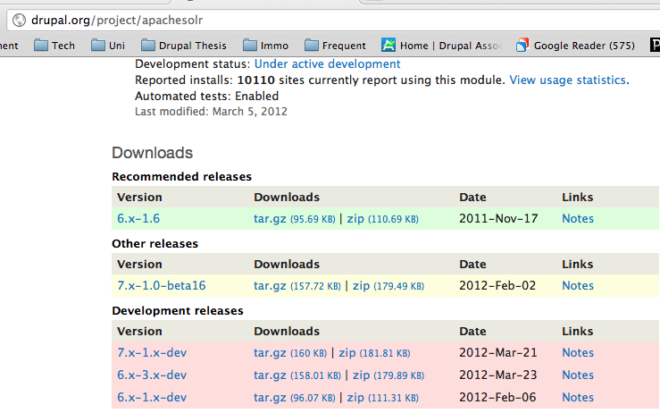

Drupal Dev Days
Drupal Search and Solr Wizardry

Matthias Hutterer
Nick Veenhof
Introduction

Nick Veenhof

https://github.com/nickveenhof/msc_solr_drupal/


Apache Solr
- Open Source Enterprise Search Platform
- Apache Foundation
- Full-text search, highlighting, faceted search, clustering, rich document handling
- Distributed
- Replication/scalable
- Java
- REST HTTP and answers in XML/JSON and some others
- Not Relational
Exploration
Standard Drupal Search
cron.phpIndexing process
sends to
Advantages
- HTML tag scores
- Accent Removal
- Stemming
Disadvantages
- SQL not optimized to search, slow for big datasets
- Limited operators
- Not scalable/not dedicated for search
Apache Solr
Advantages
- Blazingly Fast
- Loads of extra features (facets, correction, ...)
- Stemming of (almost) any language
- Text extraction from documents with Tika
Disadvantages
- Separate server + Java
- Comes with no authentication
- Not a one-step process
Facet Api
- General Faceted Search API
- Multiple modules support it
- Only Drupal 7
Improvements needed


Apache Solr
- UI refactoring
- Multi entity support
- From global to context driven
- Get rid of core search dependency
- Performance
- Access control
- De-duplication of code
- Automatic Testing
- Backport
- ...
Facet Api

- Improve data handling/facets
- Configuration import
- Widget problems
- backport
- ...
Implementation
Drupal Camps and Seminars
- Drupal user Group Belgium
- 9th of November
- 60+ people
- Very good feedback
- Struggled with Dutch!
- Drupal Camp Toulouse
- 26th of November - 27th of November
- 100+ people
- Language barrier
- More in depth Solr
- Internal Training
- 9th of December
- 20+ people
- No visual contact with the audience
- Drupal Science Camp Cambridge
- 21st of January - 22nd of January
- 200+ people (40+ in the room)
- More Solr developers!
- Amazing questions and confidence boost
Blog Posts
- Using Github application in your patch workflow
- Attending the Boston Drupal User Group
- Changing a git commit message in the commit history
- A story of an intern at Acquia
- Adding a custom plugin to Solr
- A simple guide to install Apache Solr 3.x for Drupal 7
- Slides of the Drupal Search and Solr sessions
- Upgrading from Apache Solr 1.4 to Apache Solr 3.5 and its implications
Over 20.000 page views!
Implementation
Backporting both modules
Backport Challenges
- DBTNG to MySQL
- Autoload
- Static variables
- Theming layer
- Multi entity to single entity
- Non-existing Drupal 7 functions
- ...
Performance testing Acquia Search
- MergePolicies
- LogByteSizeMergePolicy (1.4)
- LogDocMergePolicy (1.4)
- TieredMergePolicy (3.x)
- Jmeter
- Apache Access Logs
Performance Graphs (Buytaert.net)

Performance Graphs

Performance conclusions
- Keep LogByteMergePolicy with factor 4
- TieredMergePolicy very interesting. Completely different
- Solr 3.5 faster than Solr 1.4.1
- Don't rely on default settings
- Set Lucene version explicitly
Additional modules
- Facet Api Slider
- Apache Solr Term
- Apache Solr Commerce
- Apache Solr User
- Apache Solr Multi Site Search (6.x - 7.x)
- Apache Solr Sort UI
Conclusion
Achievements
- +1000 hours of work
- 10000+ users of the project
- Drupal 7 module usage doubled